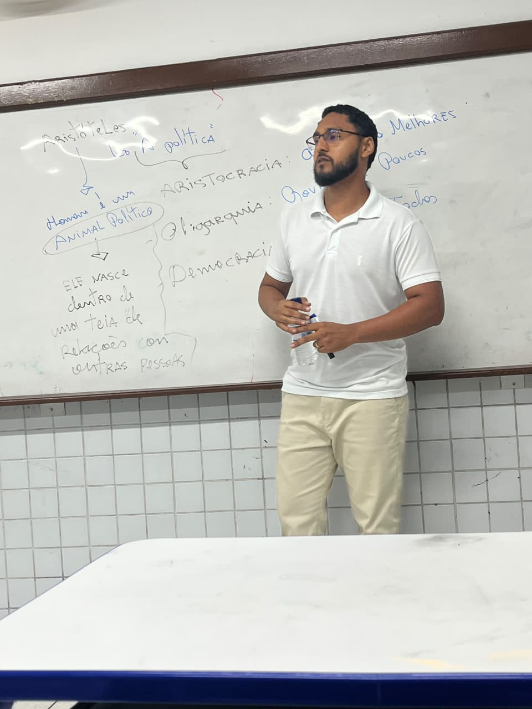

Domine os conteúdos mais cobrados no ENEM e vestibulares de forma estratégica, didática e leve. Uma jornada de aprendizado pensada para garantir a sua aprovação.
Clique ou toque na moeda
👆🏽
A maioria das questões de vestibular e ENEM se concentram em quatro grandes domínios. Domine cada um deles com clareza.
Estudo da origem, limites e natureza do conhecimento humano. Compreenda a passagem do Mito ao Logos, o Racionalismo, o Empirismo e a visão de Kant.
Toque em um tema para pedir ajuda pelo WhatsApp.
Reflexão sobre as condutas humanas, deveres e justiça. Entenda a Ética das Virtudes aristotélica, o Imperativo Categórico kantiano e o Utilitarismo.
Toque em um tema para pedir ajuda pelo WhatsApp.
Organização do poder, cidadania e direitos. Domine os Contratualistas (Hobbes, Locke, Rousseau), Maquiavel, Escola de Frankfurt e teorias de Redação.
Toque em um tema para pedir ajuda pelo WhatsApp.
Investigação sobre a arte, a beleza e a sensibilidade cultural. Entenda o conceito de Indústria Cultural e a recepção da arte na sociedade moderna.
Toque em um tema para pedir ajuda pelo WhatsApp.

Licenciado em Filosofia & Pesquisador
Olá! Sou o Professor Elber Alves Ferreira. Minha trajetória é marcada pela paixão pelo ensino e pelo compromisso em transformar temas complexos da filosofia em um conhecimento prático e acessível.
Universidade Federal do Maranhão (UFMA)
Programa de Pós-Graduação em Cultura e Sociedade (PGCULT / UFMA)
"Quando você compartilha o saber, o saber só cresce. É como as águas que 'confluenciam'. Quando o rio encontra o outro rio, ele não deixa de ser rio. Ele passa a ser um rio maior."
Estudar filosofia também pode ser divertido! No perfil @filosoficalmeme.br, transformamos conceitos densos de Aristóteles, Kant ou Nietzsche em memes descontraídos para facilitar a fixação do conteúdo durante as revisões.
Escolha a modalidade que melhor se adapta à sua rotina de estudos para o vestibular.
São Luís - MA e Região
Atendimento particular e exclusivo no conforto da sua casa. Ideal para quem prefere o contato presencial e um acompanhamento individualizado.
Para todo o Brasil
Aulas ao vivo pela internet com quadro interativo e materiais digitais inclusos. Praticidade para estudar de onde você estiver.